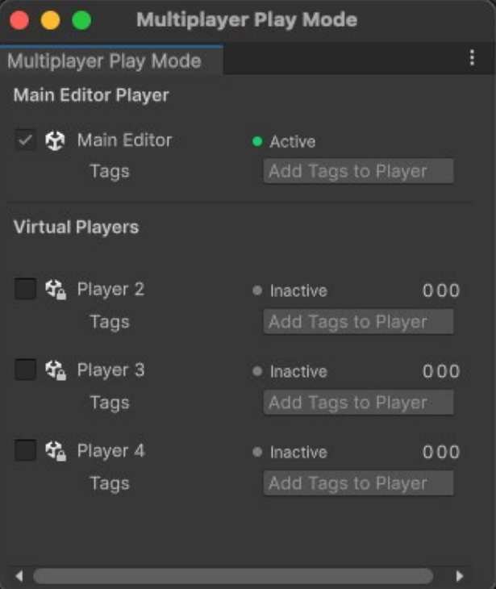

Exercise 2: First multiplayer test
Testing in multiplayer play mode
Open Multiplayer Play Mode (Window > Multiplayer Play Mode).

Then, check at least one additional Virtual Player from the list in the above screenshot, so you can test a minimum of one host and client. Remember that the host is a client that is also running on the server.
When entering Play mode, a second session of the application starts running in a cloned window:
- Select the NetworkManager in the Hierarchy. Under Start Connection in the Inspector, select Start Host. The PlayerArmature_Networked object appears in the Game view.
- Use the Layout button in the second window to enable the Inspector and Hierarchy – much like a second session of the Editor. Select the user interface components to enable and press Apply.
- In the cloned Editor window, locate the NetworkManager under DontDestroyOnLoad in the Hierarchy.
- In the Inspector pane, under Start Connection, select Start Client.
- Two instances of PlayerArmature_Networked now appear in the Hierarchy. In the Scene view, they appear on top of one another. Using the keyboard or gamepad, move one player instance away from the other to separate them.
- Select a PlayerArmature_Networked instance in the Hierarchy to inspect its NetworkObject component.
- At runtime, note how each instance is identified by its GlobalObjectIdHash (project asset ID) together with its NetworkObjectId (unique instance index). Below that, the OwnerClientId indicates whether the host or the client controls the instance.
- Switch between the two instances to compare the flags: IsSpawned, IsLocalPlayer, IsOwner, IsOwnerByServer, etc.
- Use the Network Visualization panel to distinguish between the two instances more clearly. This handy diagnostic tool appears in the Scene view once you’ve installed the Multiplayer Tools package.
- The two instances are color coded by Bandwidth (how much data is being transmitted) or Ownership (which client has authority over the Player NetworkObject).
Though the NetworkManager creates separate instances for each client, each independently controls the same character. In the Scene view, the character movements driven by WASD controls are not synchronized between the client and host.
Although the NetworkManager initially synchronizes their positions at coordinates (0, 0, 0) when players first connect, their subsequent movements are not. These are single-player components. To make these work in a multiplayer application, we need to add some networked scripting.
Creating your own UI start buttons
To create a more user-friendly way to start network sessions at runtime, you can add onscreen buttons that replicate the functionality of the NetworkManager’s Inspector buttons. This can be achieved using either Unity UI (UGUI) or UI Toolkit.
In your UI of choice, create three buttons labeled Client, Host, and Server. Then, have them invoke these respective callbacks from the NetworkManager singleton:
- NetworkManager.Singleton.StartClient
- NetworkManager.Singleton.StartHost
- NetworkManager.Singleton.StartServer
These callbacks allow you to start the network session without using the buttons from the Inspector window.
Testing with the first build
To test your Unity 6 Netcode for GameObjects (NGO) game with multiple standalone builds running locally, follow these steps:
Enable Windowed Mode and Background Running
In Unity, navigate to Edit>Project Settings>Player. Under the Resolution and Presentation section:
- Set Fullscreen Mode to Windowed.
- Uncheck Resizable Window or leave it enabled depending on preference, but ensure standard non-exclusive windowing is active.
- Under the Resolution tab, enable Run In Background so instances keep processing network packets even when they lose window focus.
Build the Executable
Go to File - Build Profiles (or File - Build Settings):
- Make sure your startup scene is included and checked at index 0.
- Ensure your target platform matches your OS (Windows, macOS, or Linux).
- Click Build, create a designated output folder (e.g., Builds/), and export the executable.
Launch the Instances
- Double-click the generated executable directly from your file explorer to open the first instance. Once the application window opens, trigger the Host action (StartHost).
- Without closing the first window, double-click the same executable file again to launch a second independent process (repeat for additional clients as needed). On the new window, trigger the Client action (StartClient).